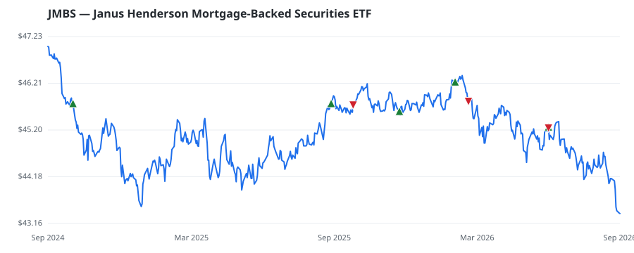

bullish · bearish · n/a — dots: price>SMA10 · SMA10>SMA50 · SMA50>SMA200 · up>down volume (20d)
Other · unknown cap
Members who bought JMBS earned a dollar-weighted -0.9% from their disclosure dates, versus +4.5% for the S&P 500 over the same holding windows (-5.4% alpha).

▲ green = a disclosed purchase · ▼ red = a disclosed sale (plotted on disclosure date)
| Member | Chamber | Out-performer | Disclosed buys $ | Return on buys |
|---|---|---|---|---|
| John Boozman | senate | — | $48K | -0.9% |
Disclosed $ figures are bracket midpoints — filings report ranges (e.g. $1,001–$15,000), not exact amounts.
| Fund | Fund alpha vs SPY | Position | % of book |
|---|---|---|---|
| Daybright Advisory Services, Inc. | +1% | $0M | 0.1% |
Hedge data: SEC EDGAR 13F · ranked funds beat SPY in >50% of their quarters · fund alpha = mirror-portfolio return minus SPY.